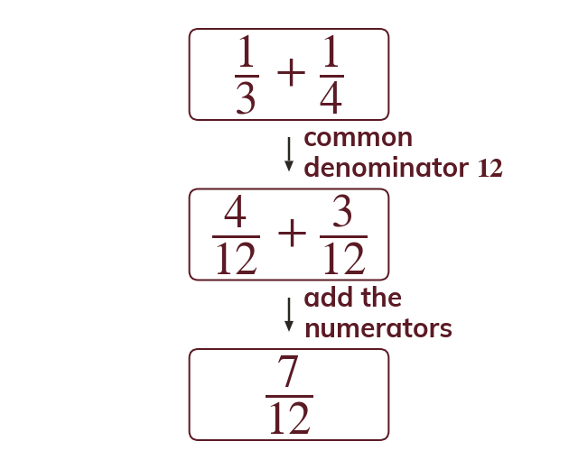
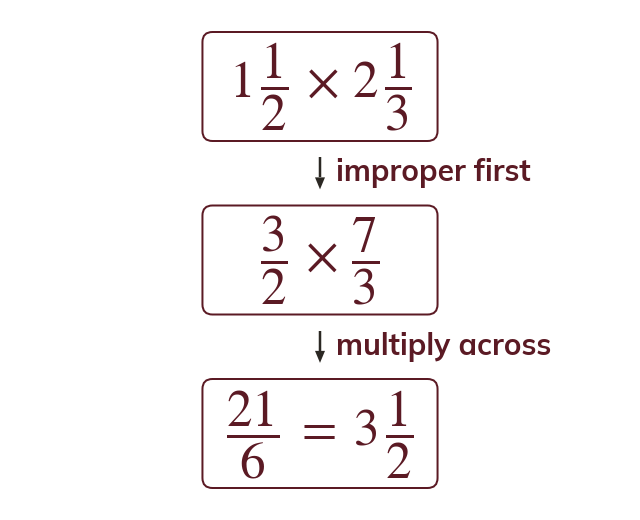
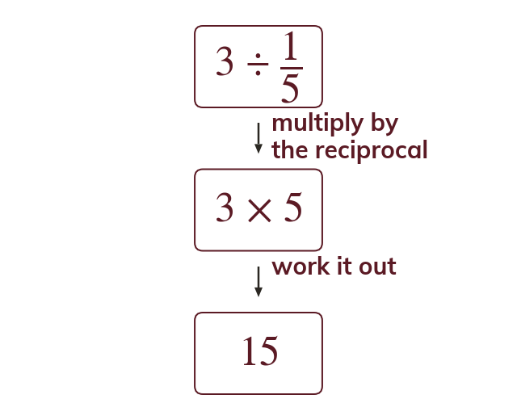
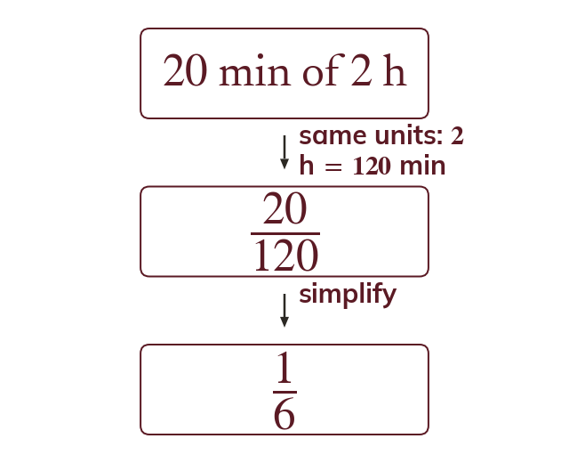

A common denominator first
Fractions are added or subtracted only over a common denominator. Then the numerators are added and the denominator stays the same.
Recipes, shares and times are often given as fractions, and a calculator shows a decimal that may not be exact. Working exactly with fractions keeps the answer exact.
Work down the page at your own pace. Write every answer in your book first, then click to check it.
Read each card, then follow the worked examples one step at a time.

Fractions are added or subtracted only over a common denominator. Then the numerators are added and the denominator stays the same.

To multiply fractions, multiply the numerators and multiply the denominators, with no common denominator needed. A mixed number is made improper first.
Pick an answer. If it's wrong, the feedback tells you which mistake it was.
Read each card, then follow the worked examples one step at a time.

Dividing by a fraction means multiplying by its reciprocal. So
Every whole holds fifths.

One quantity as a fraction of another is part over whole. Use the same units: minutes of hours is
Pick an answer. If it's wrong, the feedback tells you which mistake it was.
Finished? Next lesson: 10.13.3 Percentage Change and Reverse Percentages.
Log in, then search for a code to practise that skill.